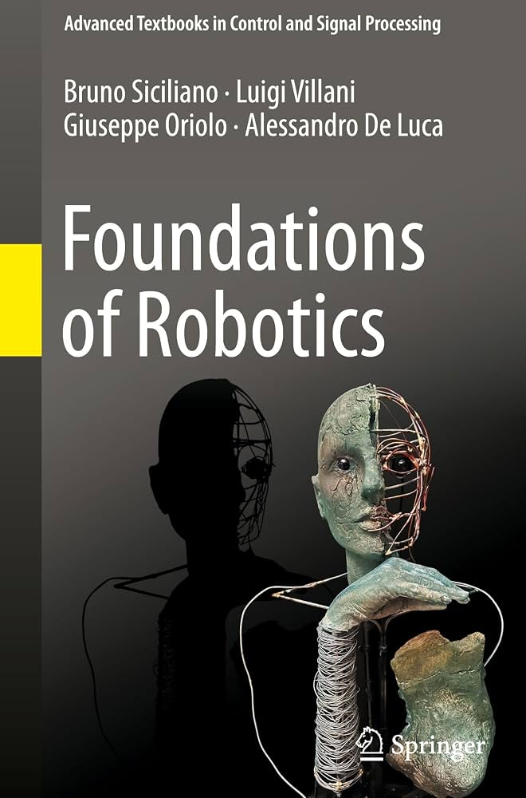
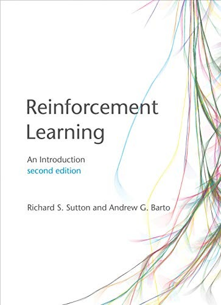
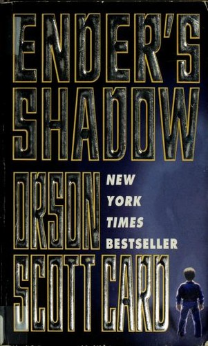

currently reading
robotics

Foundations of Robotics
Kinematics · Dynamics · Trajectory Planning · Control
// reading list
A running shelf — the texts that shaped how I think about robots and learning, and a few novels for the off hours.

Kinematics · Dynamics · Trajectory Planning · Control

MDPs · Temporal-Difference · Policy Gradients · Function Approximation
Supervised/Unsupervised · Deep Learning · Transformers · PyTorch



Topics I'm digging into next. If you have a recommendation on any of these — or something else you think I'd like — I'd love to hear it.
Email me at ogershony[at]gmail.com